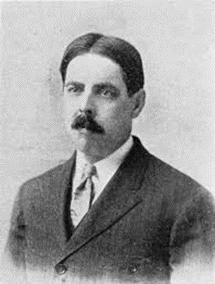
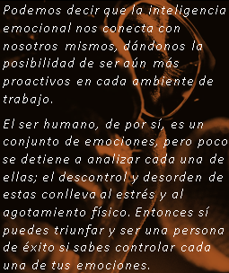
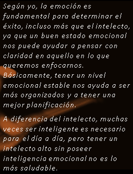

Fundamentos Teóricos
Investigación y análisis sobre el origen de la Inteligencia Emocional
1. Origen y Evolución
¿A quién se le atribuye la popularización del término "Inteligencia Emocional" y en qué año publicó su obra principal?
Mencione al menos dos precursores (psicólogos o investigadores) que hablaron de conceptos similares antes de la década de los 90.

Edward Thorndike propuso el concepto de inteligencia social, definida como la capacidad de comprender y manejar a las personas y actuar sabiamente en las relaciones humanas.

Howard Gardner en su teoría de las inteligencias múltiples, planteó las inteligencias interpersonal (capacidad de comprender a los demás) e intrapersonal (capacidad de comprenderse a uno mismo)
2. Definición Conceptual
Explique con sus propias palabras: ¿Por qué la Inteligencia Emocional puede ser más determinante para el éxito que el Coeficiente Intelectual (CI)?

GUSTAVO ADOLFO AGUILAR FURNIELES

MANUEL FRANCISCO MARTINEZ YÁNEZ